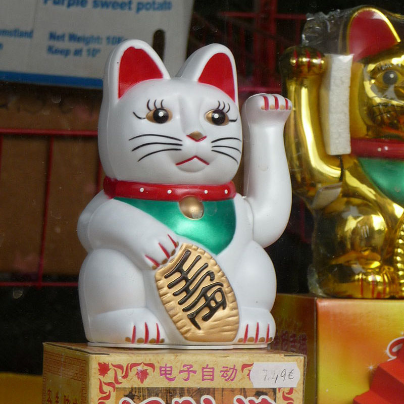
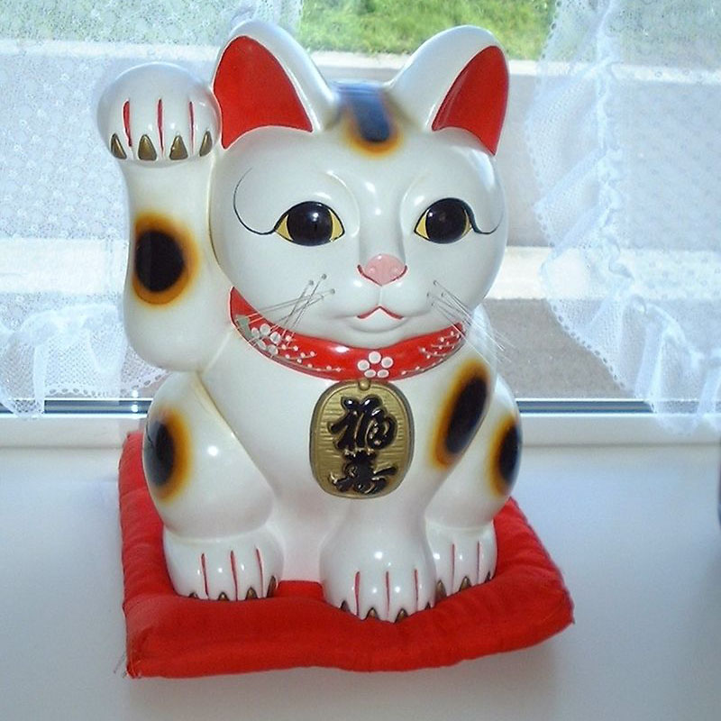
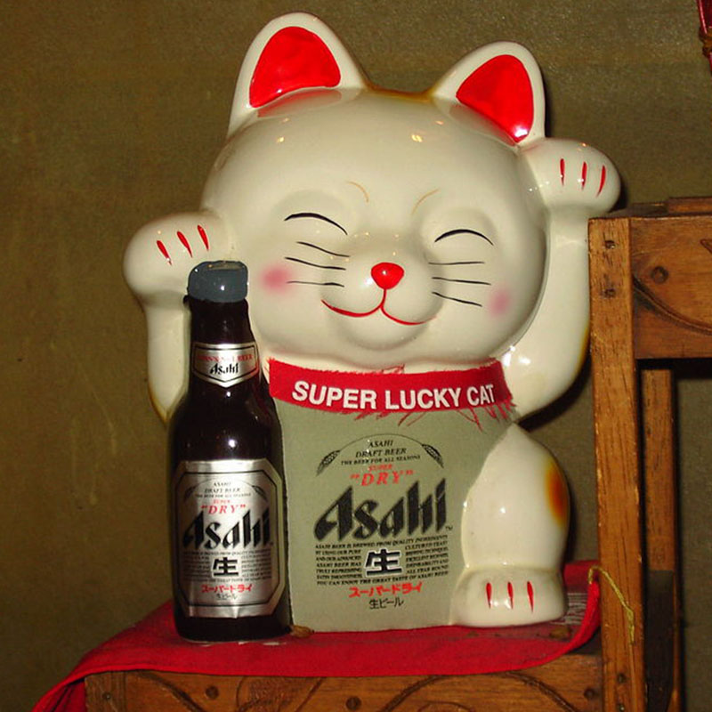
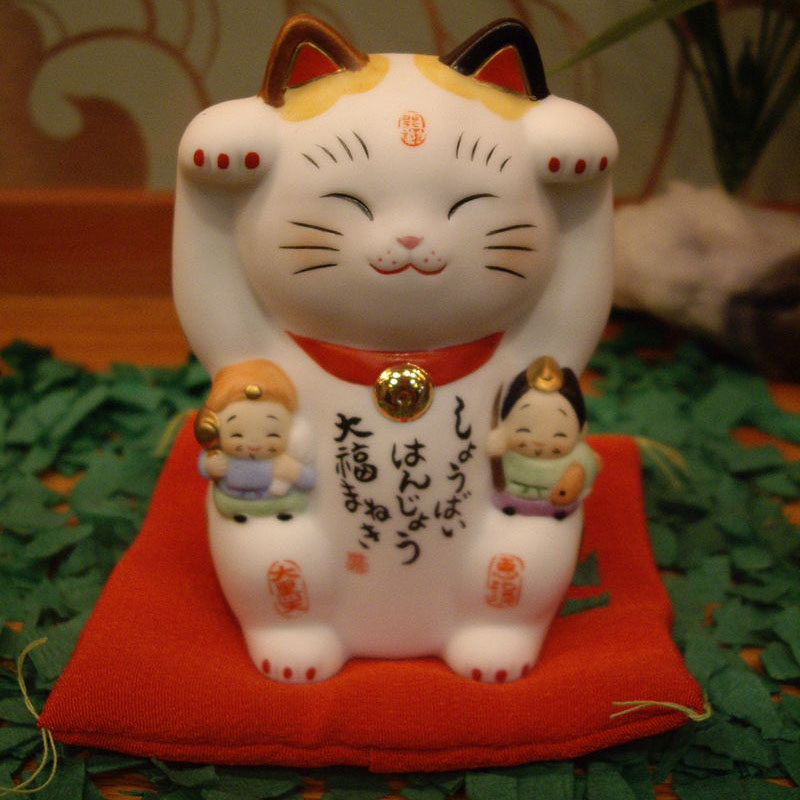

The maneki-neko is a common Japanese figurine which is often believed to bring good luck to the owner.
In modern times, they are usually made of ceramic or plastic. The figurine depicts a cat (traditionally a calico Japanese Bobtail) beckoning with an upright paw, and is usually displayed in shops, restaurants, pachinko parlors, and other businesses.
Some of the sculptures are electric or battery-powered and have a slow-moving paw beckoning. The maneki-neko is sometimes also called the welcoming cat, lucky cat, money cat, happy cat, beckoning cat, or fortune cat in English.
To some Westerners (Italians and Spaniards are notable exceptions) it may seem as if the maneki-neko is waving rather than beckoning. This is due to the difference in gestures and body language recognized by some Westerners and the Japanese. The
Japanese beckoning gesture is made by holding up the hand, palm down, and repeatedly folding the fingers down and back, thus the cat's appearance. Some maneki-neko made specifically for some Western markets will have the cat's paw facing upwards,
in a beckoning gesture that is more familiar to most Westerners.



